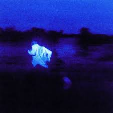

Daniel Ceaser
Daniel Caesar, is a Canadian singer and songwriter. After independently building a following through the release of two EPs, Praise Break (2014) and Pilgrim's Paradise (2015), Caesar released his debut studio album, Freudian, in 2017, which received three Grammy Award nominations, winning for the collaboration with American singer H.E.R. "Best Part". In 2019 he released his second studio album, Case Study 01, longlisted for the 2020 Polaris Music Prize.
Top Daniel Ceaser's Songs
- SuperPower
- Transform
- Dislluisoned
- Get You
- Best Part
- Who knows
If you want to know more about his songs
click on the link
http://www.youtube.com/@DanielCaesar